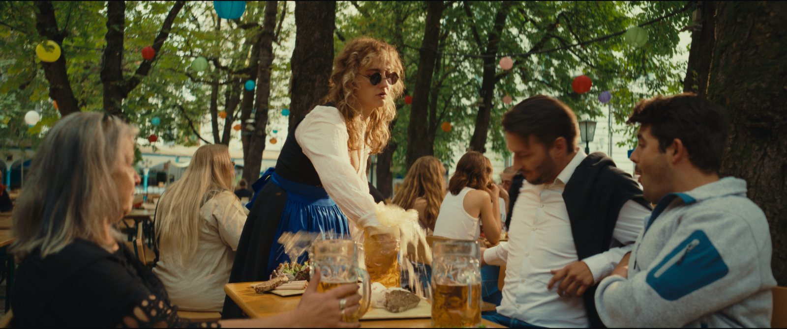
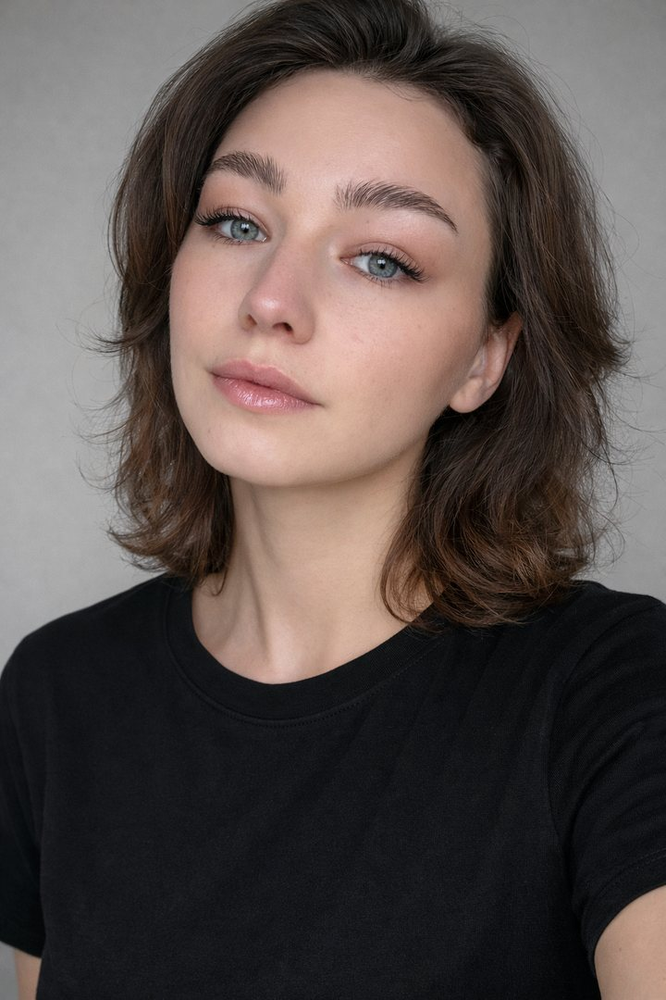

KATY ILICHEVA
Film & SFX Makeup Artist in Munich. Cinematic beauty, prosthetics and character work for film, fashion and commercial productions.
Photos

About me
Munich-based Makeup & SFX Artist working across film, fashion and commercial productions. Katy moves between cinematic beauty, prosthetics and character design, adapting each look to the story, camera and production environment.
Based in Munich and available internationally.
Bookings and collaborations
Let’s create the character.
For film, fashion and commercial projects, email is the best place to start.